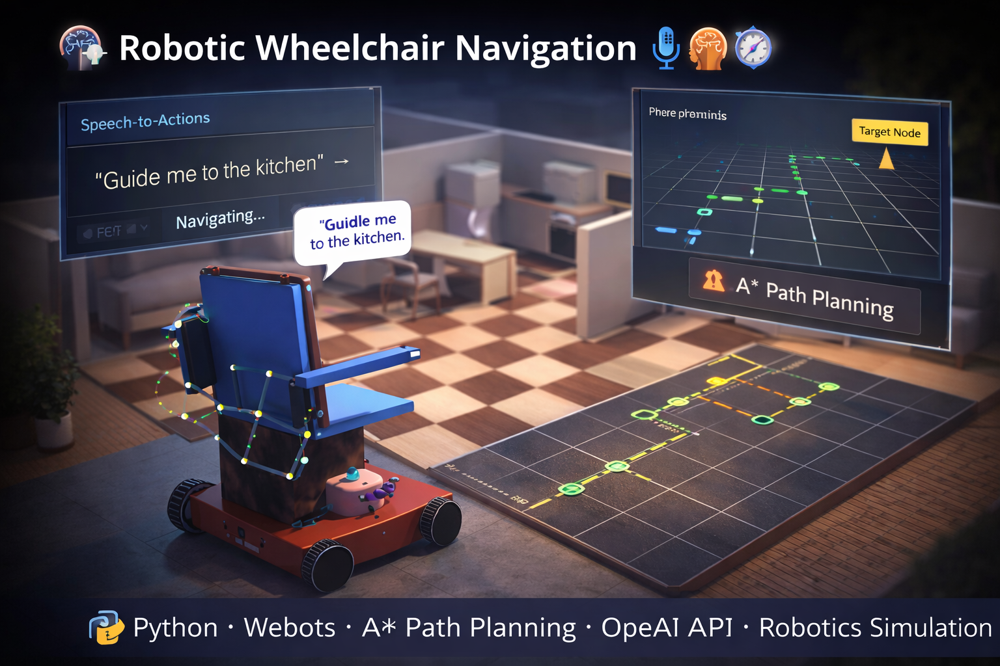
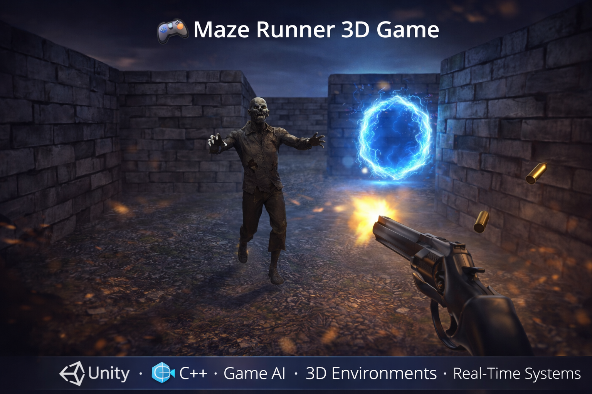

Projects




Computer Vision & AI Engineering Student
I design and build intelligent vision systems and edge-AI solutions, with a strong focus on real-world deployment, system robustness, and human-centred applications.
Python · Java · C++ · C# · JavaScript · HTML · CSS · Node.js · PHP (Basics)
Deep Learning (CNNs, RNNs, Transformers) · PyTorch · TensorFlow · Keras · Scikit-learn
OpenCV · Image Classification · Object Detection · Pose Estimation · Webots (Robotics Simulation)
Pandas · NumPy · Matplotlib · Seaborn · Data Analysis · Visualisation
AWS (SageMaker – Basics) · Google Cloud AI · Git · GitHub · Docker
Agile · Scrum · Version Control · Collaborative Development
University of Limerick, Ireland
A taught master’s programme developing advanced skills in computer vision, machine learning, and applied artificial intelligence.
Status: In progress
University of Kent, Canterbury, United Kingdom
Degree Status: Graduated
Graduation:
University of Kent, Canterbury, United Kingdom
Degree Status: Graduated
Graduation:
Industry experience in software engineering and cloud-based application development
Skills demonstrated: JavaScript · Web Development · Agile · Cloud Platforms · Software Testing · Team Collaboration
An edge-AI based monitoring system designed to detect daily activities and falls in elderly individuals using computer vision, with real-time alerts for caregivers.
Python · Computer Vision · Pose Estimation · Raspberry Pi · Flask · Edge AI
In active development
A simulated robotic wheelchair built in Webots that combines voice control, large language models, and classical path planning for indoor navigation.
Python · Webots · A* Path Planning · OpenAI API · Robotics Simulation
A reinforcement learning agent trained using Deep Q-Learning to autonomously play the classic Snake game, improving performance through reward-based learning.
Python · Reinforcement Learning · Deep Q-Learning · Neural Networks
A first-person 3D maze survival game developed in Unity, featuring increasing difficulty, AI-driven enemies, and real-time player interaction.
Unity · C++ · Game AI · 3D Environments · Real-Time Systems
Competed in an industry-led hackathon organised by ACI Worldwide, focused on solving real-world challenges related to fraud detection and code security within financial systems. Secured a 2nd place finish among multiple teams.
Skills demonstrated: Python · Data Analysis · Cybersecurity · Problem Solving · Industry Collaboration
Selected participant in an 8-week multidisciplinary consultancy programme, collaborating with industry partners to address real-world business and innovation challenges.
Skills demonstrated: Problem Solving · Communication · Teamwork · Industry Research · Presentation Skills
Invited as a guest speaker at the University of Kent to share my academic and professional journey with junior students, reflecting on my industrial placement year, final-year undergraduate project, and postgraduate research in Artificial Intelligence.
Skills demonstrated: Public Speaking · Mentoring · Communication · Leadership · Industry Insight

Speedcubing has been a long-standing intellectual pursuit for me, spanning over 14 years of consistent practice and international competition. During this time, I have competed in 20 official competitions across the UAE, India, the United Kingdom, and Ireland, earning multiple podium finishes.
My interest extends beyond conventional speed events into more cognitively demanding disciplines, including blindfolded solving, which I began exploring in 2014. I particularly enjoy events that emphasise spatial reasoning and strategic planning, with Megaminx being my favourite due to its complexity and depth.
In August 2022, I participated in an international mind-sport competition held in London, UK, where I secured third place in the 3×3 Blindfolded category. Experiences like these have strengthened my focus, composure under pressure, and problem-solving mindset.
Driving and travelling are two closely connected interests that I find both grounding and energising. I have been driving for over two years and particularly enjoy long, spontaneous drives without a predefined destination, using the journey itself as a space for reflection.
I have also developed a strong passion for travelling from a young age and have travelled extensively across the United Kingdom, exploring a wide range of counties and regions. These experiences have broadened my perspective and nurtured a curiosity for new places and cultures.
Looking ahead, I am keen to travel to more countries in the coming years and plan to curate a small gallery of photos and videos capturing memorable journeys and drives as this section evolves.
Music has been a meaningful creative outlet for me, with my interest deepening significantly during the COVID lockdown period in 2020. While I had always enjoyed listening to and performing music, this time allowed me to focus on producing original work.
I began exploring songwriting and music production using FL Studio, gradually building a home-studio setup and experimenting with composition, sound design, and storytelling through music.
Although I explored opportunities to learn within professional studio environments, practical constraints meant much of my development remained self-directed. I aspire to continue refining my production quality over time, with the goal of releasing more polished, studio-level work in the future.
Football has been a consistent part of my life since my early teenage years, contributing to both my discipline and teamwork skills. I began playing competitively around the age of 11–12 and later competed in the NSL Tournament held at the Sevens Stadium in Dubai.
During my time in Kerala, India, I continued competing at a national level, participating in the All-India TAISI Tournament held in Bengaluru. These experiences reinforced the importance of collaboration, resilience, and adaptability.